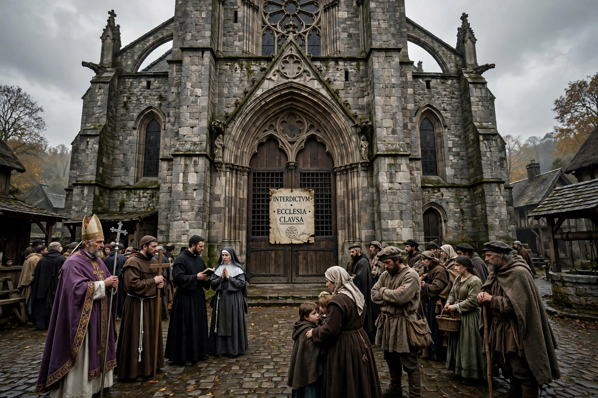

From Wikipedia, the free encyclopedia
| Interdict | |
|---|---|
 | |
| Type | Ecclesiastical censure in canon law |
| Effect | Suspension of public worship and most sacraments in a place or for a person |
| Related | Anathema, excommunication |
In canon law of the Catholic Church, an interdict (Latin: interdictum, "prohibition") is an ecclesiastical censure, or ban, that prohibits persons, certain active church individuals or active church members from participating in certain continued aspects of religious routine with an aim of promoting repentance. More rarely it was imposed on an entire territory, suspending public worship and most sacraments there.
An interdict is distinguished from excommunication, which cuts a person off from communion with the Church, and from anathema, a solemn form of excommunication. Under an interdict, the faithful remained members of the Church but were deprived of some spiritual benefits: Mass could not be celebrated publicly, bells were silenced, and baptisms, marriages and funerals were restricted or performed privately without solemnity.
Interdicts became a powerful political weapon in the Middle Ages. Popes laid whole kingdoms under interdict to pressure rulers: Pope Innocent III placed England under interdict from 1208 to 1213 during his dispute with King John over the appointment of Stephen Langton as Archbishop of Canterbury. France under Philip Augustus and Norway also experienced interdicts. The inhabitants, blamed on their ruler for the loss of religious services, often pressed the king to submit.
A personal interdict forbade an individual from receiving the sacraments or holding ecclesiastical office. A local interdict applied to a church, city, diocese or country. A general interdict covered an entire territory, as in the English case.
The 1983 Code of Canon Law retains the interdict as a medicinal penalty for individuals (canon 1332), but the sweeping territorial interdicts of the medieval period fell out of use. A person under interdict may not celebrate or receive the sacraments or exercise ecclesiastical offices, though the penalty is intended to be lifted upon repentance.
This article was recreated from memory.